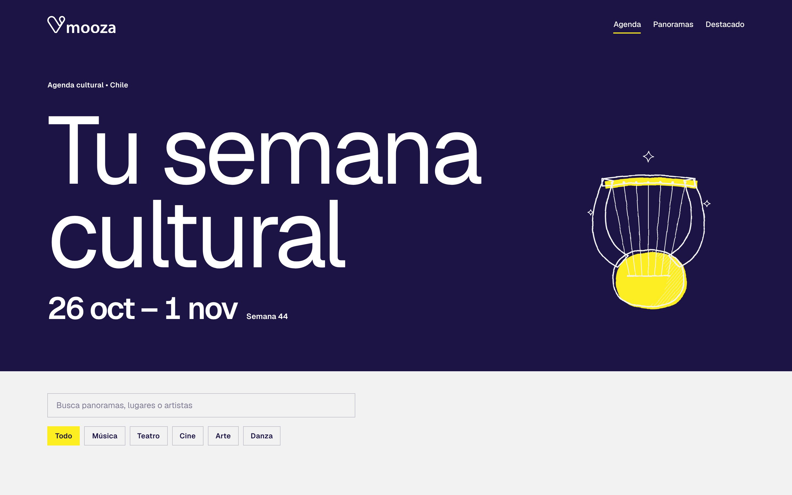
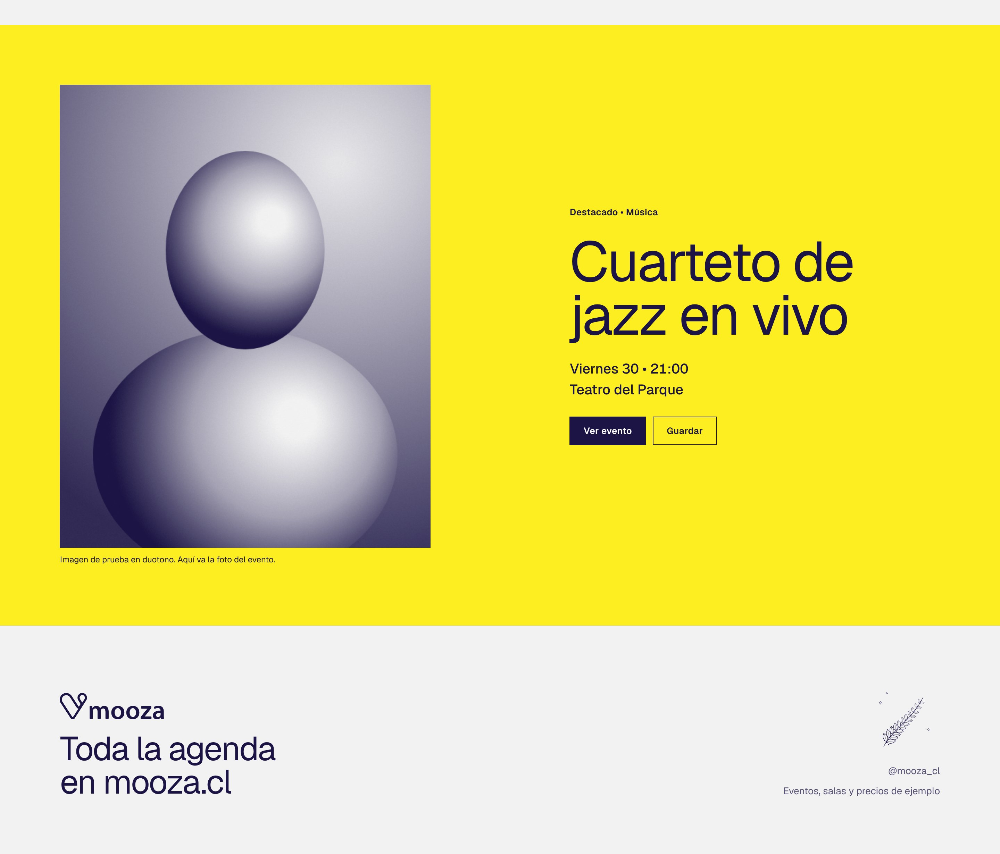
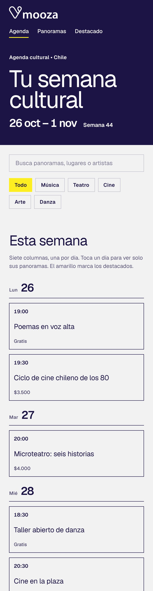
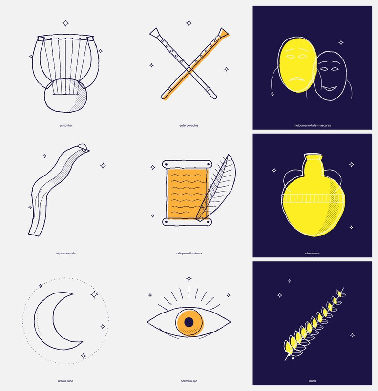

Rebrand de Mooza
Tu semana cultural
Mooza es la plataforma de agenda cultural de Chile. Este es su nuevo sistema de marca: una grilla de siete días, tres colores y una sola tipografía.

Mooza es la plataforma de agenda cultural de Chile. Este es su nuevo sistema de marca: una grilla de siete días, tres colores y una sola tipografía.
La comunicación actual usa fondos oscuros con degradados y cinco eventos por lámina. Cuesta leerla y no tiene una jerarquía clara.


Los proyectos de Puch Works marcan el rumbo tipográfico: una sans serif grande, sobria y sin adornos.

[Sumar aquí más referentes de Instagram y Behance]
Siete columnas, una por día. Cada elemento ocupa celdas completas, nada se pisa y el margen se ajusta a cada formato.

El gris es el fondo de todo. El azul manda, pero no solo: amarillo y naranjo ocupan zonas enteras y marcan los acentos. En cada pieza hay una sola zona de color.
#f2f2f2
Fondo de todo
#1b1444
El más oscuro y la tinta de los textos
#fcee21
Zona y acento
#fbb03b
Zona y acento
Peso 400 para las palabras y 500 para los números. La jerarquía sale del tamaño, no del peso.
Tu semana cultural
Titular, 400
Cuarteto de jazz en vivo
Nombre de evento, 400
26–1 • 21:00 • $8.000
Números y datos, 500
Teatro del Parque • Vie 30 • desde $8.000
Texto, 400
Solo cambia de color según el fondo: azul sobre gris, amarillo y naranjo; blanco sobre azul.
Cada cartel se parte en dos y dice una sola cosa en cada zona. El logo y la fecha viven siempre en la última fila.


Cerca de la mitad de las piezas es azul. El resto se reparte entre amarillo y naranjo.

Un relleno azul cuya máscara es el canal verde de la foto, invertido. Las sombras quedan opacas y las luces dejan ver el color de la zona, amarillo o naranjo.


La foto entra en la celda de foto o a sangre en la zona de color. El titular va en blanco solo donde la foto es oscura.

Una portada, una lámina por día con dos eventos y un cierre. Menos información por lámina y más aire.

Cabecera azul, destacado amarillo y fondo gris. La semana en siete columnas y la lista con filtros.



Eventos, salas y precios de ejemplo.
Nueve dibujos en cuatro versiones. Ocupan el lugar de la foto cuando un evento no tiene una. Son una primera propuesta para trabajar con quien ilustre.

Todo está construido sobre la misma grilla y se puede editar.
Dieciocho plantillas con texto editable, en un solo archivo.
Guías para los cinco formatos, listas para usar como capa.
Un script y una herramienta que convierten cualquier foto a tinta azul.
Nueve musas en cuatro versiones, en SVG.
Portada y componentes de interfaz con tema claro.
Color, tipografía, logo y voz, con ejemplos.